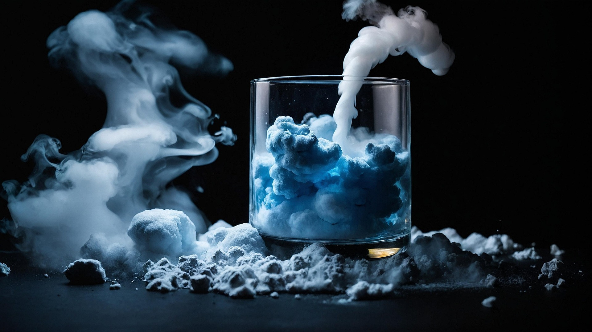
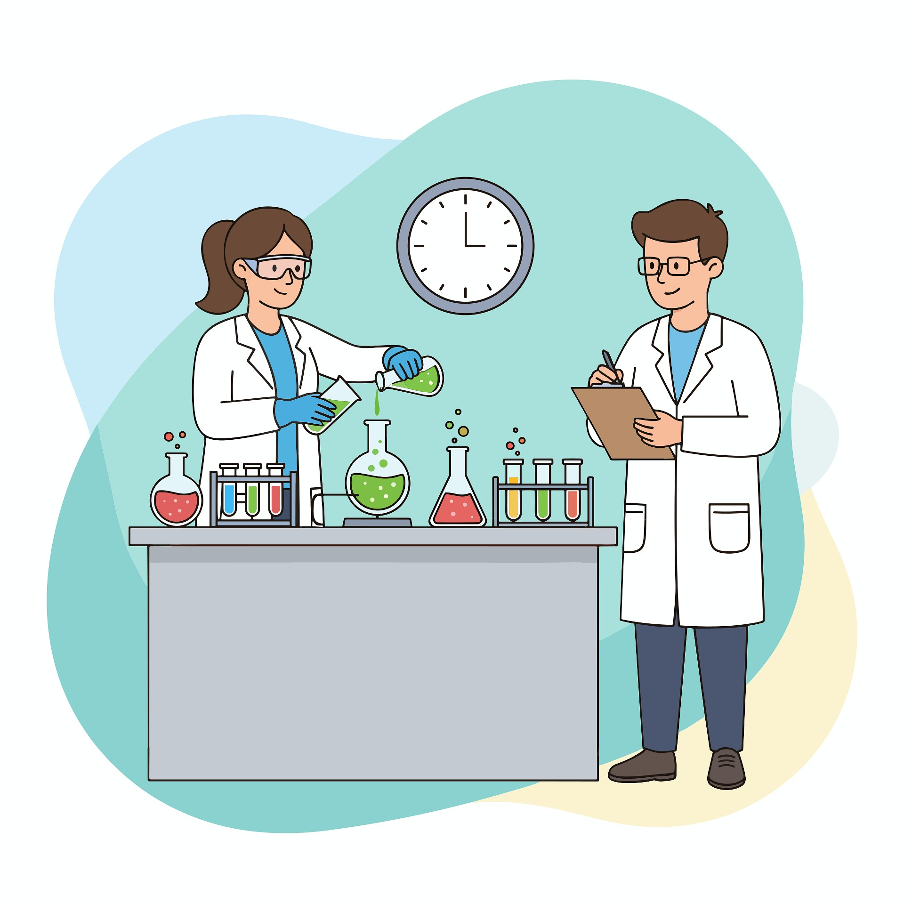
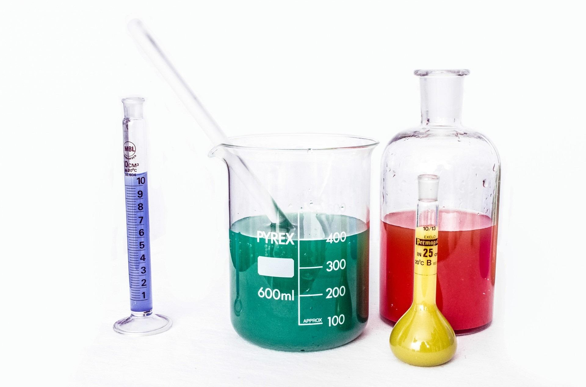

Chemistry in Action
These images show examples of chemistry experiments and scientific work in action. Chemistry can be both visually exciting and important for understanding scientific processes.



Images sourced from Unsplash